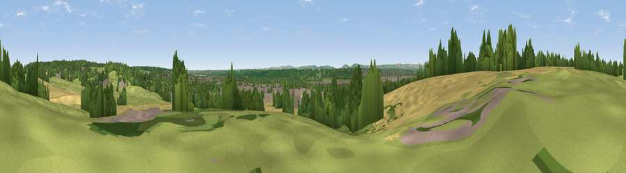

Viewpoint near Shaw
#27410 in England · top 37% of its area beats it · near ShawThe view, rendered

A 360° render of this exact spot computed from the terrain model, tree cover and land cover — summer colours, afternoon light, calibrated against photographs of famous viewpoints. Real trees, hedges and buildings will differ in detail.
The panorama
Grey silhouette: terrain skyline in each direction (720 bearings, Earth curvature and refraction included). Dashed green: skyline with trees (+15 m) and buildings (+8 m) as obstacles. Blue strip: how far the ground is visible on each bearing.
Where the view opens
Wedge length = distance to the farthest visible ground on that bearing (vegetation-aware). Rings at 10, 25 and 50 km.
What fills the view
39% grassland · 24% woodland · 24% cropland · 12% built-up ·
Angular shares of the visible panorama (visual magnitude), not map area. Landscape diversity 0.58 (0–1 Shannon).
Key numbers
More beautiful places nearby
The staircase of upgrades: each row has a higher view potential than everything closer. Driving times are estimates from straight-line distance, calibrated against real road routing — check an actual route before setting out.
| Place | Direction | Drive | Score |
|---|---|---|---|
| Viewpoint near Shaw | WNW · 1 km | ~3 min | 46.8 |
| Viewpoint near Cold Ash | ENE · 1 km | ~4 min | 47.3 |
| Viewpoint near Cold Ash | ENE · 2 km | ~6 min | 48.8 |
| Viewpoint near Ecchinswell | S · 12 km | ~22 min | 65.7 |
| Watership Down | S · 12 km | ~22 min | 71.4 |
| Beacon Hill | SSW · 12 km | ~22 min | 76.7 |
| Martinsell viewpoint | W · 32 km | ~50 min | 77.3 |
| Viewpoint near Buriton | SSE · 53 km | ~75 min | 80.0 |
51.41403, -1.28782 · source: screening · position refined by local search. Computed location — check access rights before visiting.